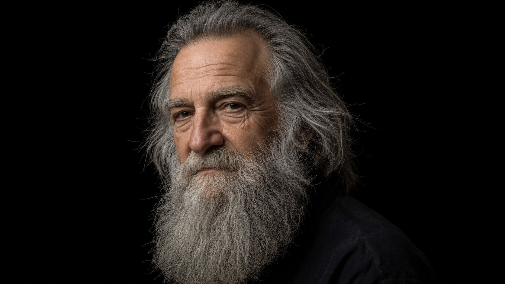
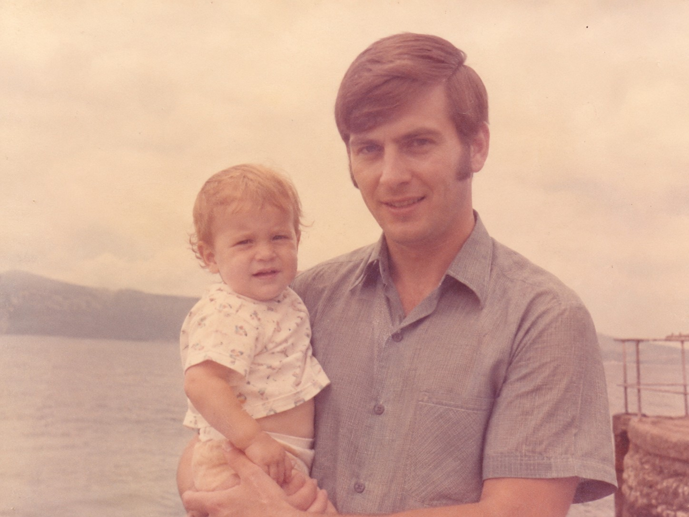
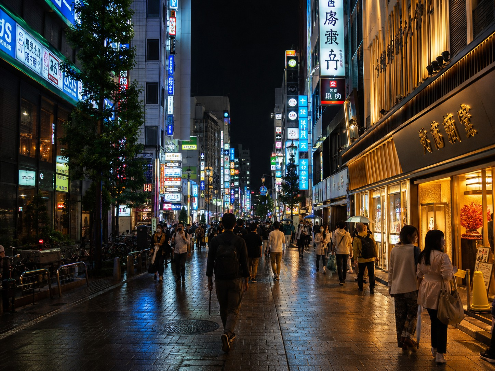
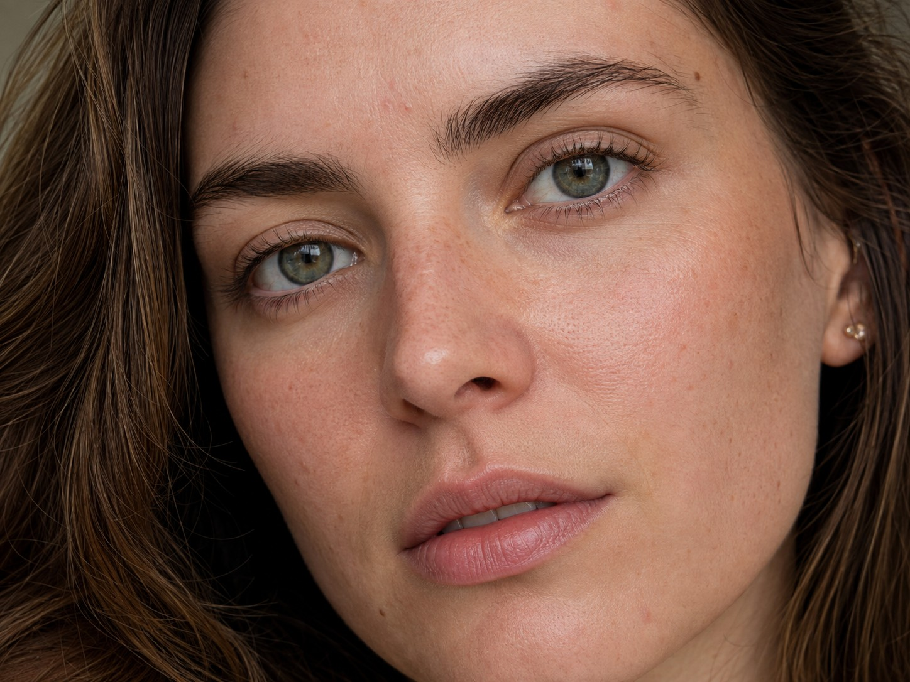
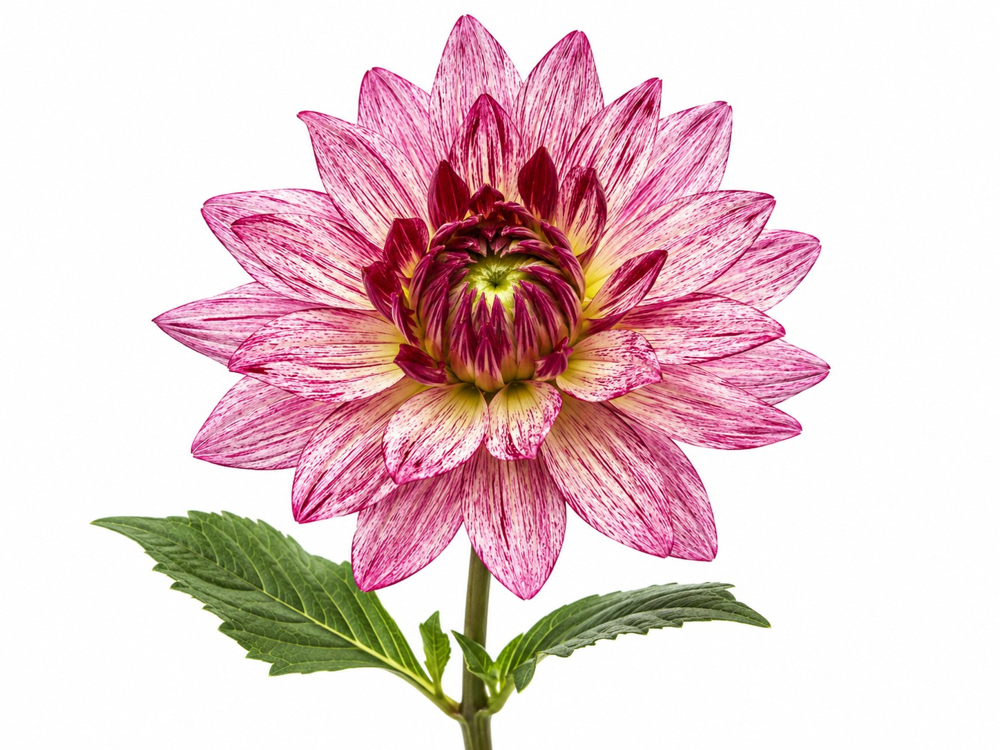

I take images apart
and put them back right.
Retouching, compositing, colour and restoration. Everything below is running live on this page — push a slider and watch the instruments move.
Selected work
Each plate is a real technique running in the browser. Drag any divider, or use the slider under it.

Cut-out & edge work
Flyaway hair separated from a black ground and placed on a new background. The hardest edge in retouching, and the one that exposes a bad mask instantly.
Black & white conversion
Channel-weighted, not desaturated. Skin holds its separation from the background instead of collapsing into the same grey.

Restoration
Faded density rebuilt, the age cast neutralised and the tonal range pulled back out, without inventing detail the original never had.

Colour grade
Shadows cooled and lifted, highlights held warm. Mixed street lighting brought to one deliberate palette instead of six competing ones.

Skin retouching
Frequency separation: blotchy colour evened out on the low frequency while pores and fine texture stay untouched on the high. Skin that still reads as skin.

Print-ready artwork
Photograph reduced to solid ink and clean paper for physical print. The same process behind keepsake handprint and footprint pieces.
What I do
Production retouching, delivered to spec and on schedule.
-
01
Cut-out & masking
Hair, fur, fabric, glass and motion edges isolated with a real alpha channel. Not a hard lasso with a feather on it.
-
02
Colour & grading
Neutralising casts, matching shots to each other, and building a consistent look across a whole shoot or catalogue.
-
03
Beauty & skin
Frequency separation and dodge-and-burn. Blemishes and stray hairs go; pores, freckles and structure stay.
-
04
Compositing
Multiple sources combined so the light, perspective, grain and edge quality agree. Those are the parts that give a composite away.
-
05
Restoration
Tears, fading, dust, mould and water damage repaired on scans of irreplaceable originals.
-
06
Print preparation
Correct resolution, colour mode, black values, bleed and transparency, checked at final output size before delivery.
-
07
Batch & template work
Hundreds of files placed into supplied templates at consistent scale and position, so the set looks like one hand made it.
-
08
Keepsake artwork
Handprints, footprints and children's art converted to clean print-ready line artwork with every gap and ridge preserved.
Send me an image
and see it come back right.
Available for freelance, contract and ongoing retouching work. Happy to run a short test file so you can judge the quality before committing to anything.